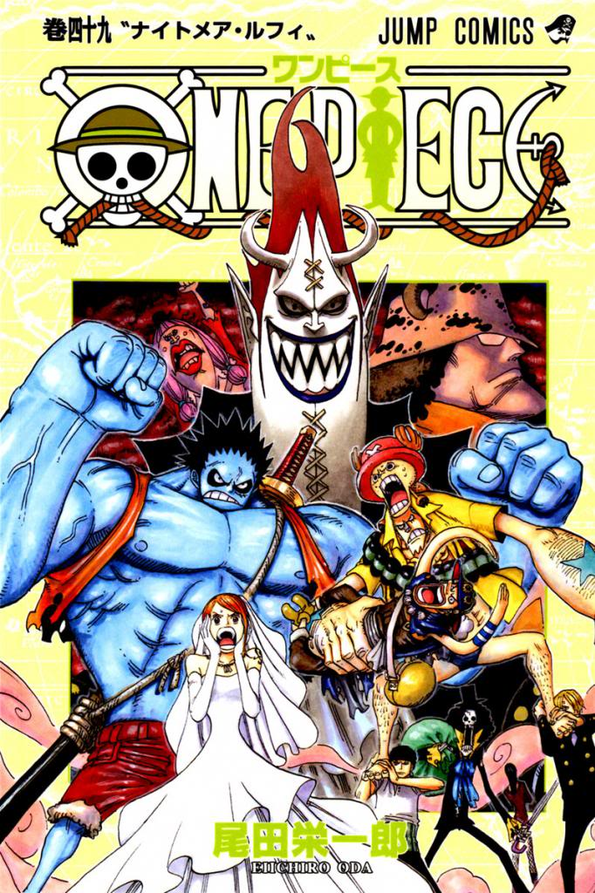

Trama

Monkey D. Rufy è un giovane pirata sognatore che da piccolo ha involontariamente mangiato un frutto del diavolo, diventando così un uomo di gomma con la capacità di allungarsi e deformarsi a piacimento. Con l'obiettivo di diventare il re dei pirati e di ritrovare il leggendario tesoro One Piece, nascosto secondo le leggende da Gol D Roger sull'isola di Raftel alla fine della Rotta Maggiore, Rufy si mette in mare e riunisce intorno a sé una ciurma. Entrano così a far parte della ciurma di cappello di paglia: Roronoa Zoro, un tenace spadaccino dalla particolare tecnica a tre spade; Nami, una furba ladra, ma soprattutto abile navigatrice; Usop, un cecchino pavido e bugiardo; Sanji, un cuoco galantuomo con un debole per le donne; TonyTony Chopper, una renna antropomorfa e medico di bordo; Nico Robin, un'archeologa che desidera fare luce su un periodo oscuro della storia del mondo; Franky, un carpentiere cyborg; Brook, uno scheletro musicista e schermidore, e Jinbei, uomo-pesce ex membro della Flotta dei Sette ed esperto timoniere. Nel loro viaggio attraverso il Mare Orientale e la prima parte della Rotta Maggiore Rufy e compagni vivono numerose avventure, trovano alleati e affrontano avversari pirati o della Marina che intendono fermarli.
East Blue
Il manga si apre con Gol D. Roger, che, in punto di morte inaugura l'epoca d'oro della pirateria, parlando del tesoro ONE PIECE. Anni dopo, dal piccolo villaggio di Foosha, Monkey D. Rufy, affascinato dalla vita da pirata, parte a bordo di una piccola imbarcazione, col prezioso Cappello di Paglia e i poteri del frutto Gom Gom. Dopo aver incontrato i pirati di Albida, e aver salvato Kobi dalle loro grinfie, i due arrivano a Sheltz Town, dove viene tenuto prigioniero lo spadaccino e cacciatore di taglie Roronoa Zoro. Affrontato il capitano Morgan e liberato Zoro, Luffy parte nuovamente, salutando Kobi, e al fianco di Zoro. L'avventura si sposta Orange Town, dove i protagonisti incontrano i pirati di Bagy, e l'astuta Nami. Un'accesa battaglia tra Luffy e Bagy pone fine alla distruzione di Orange, e Nami accetta di entrare nella ciurma come navigatrice. Giunti a Shirop, i tre conoscono di Usop, bugiardo dal cuore d'oro, e legato a Kaya, ragazza ricca ma dalla salute cagionevole. Venuti a sapere delle vere intenzioni di Krahador, uno dei maggiordomi di Kaya, i protagonisti faranno di tutto per fermare il suo attacco pirata. Riusciti nell'impresa, Kaya decide di ringraziarli donando loro la Going Merry, dove salirà anche Usop. I protagonisti si dirigono al Baratie, ristorante gestito da Zef, che viene attaccato dai pirati di Creek. In una serie di battaglie Luffy riesce a fermare Creek e salvare il locale. Sanji decide di entrare nella ciurma come cuoco. Nami è però fuggita con la Going Merry, diretta ad Arlong Park. Nami è diventata una ladra per avere abbastanza denaro da liberare Coco, villaggio sotto il dominio di Arlong. Disperata per aver perso tutto il denaro, la ragazza chiede aiuto a Luffy, che insieme a Zoro, Sanji e Usop riesce a distruggere Arlong Park. Nami entra ufficialmente nella ciurma, e Luffy ottiene la sua prima taglia: 30 milioni di berry. La saga dell'East Blue si conclude a Rogue Town, città natale del Re dei Pirati, dove Luffy viene minacciato da Albida e Bagy, e fa la conoscenza di Smoker, ufficiale della Marina. Il protagonista viene salvato da un uomo misterioso, e torna a seguire il viaggio verso la Rotta Maggiore.
Alabasta
Proseguendo il loro viaggio, i Mugiwara arrivano alla Reverse Mountain e incontrano la balena Lovoon, che riusciranno a superare solo grazie all'aiuto di Crocus, guardiano della zona, che introduce l'importanza del loge pose per navigare nella rotta maggiore. Arrivati a Whisky Peak, con a bordo Mr. Nine e Miss Wednesday, incontrati dentro Lovoon, i Mugiwara si ritrovano in trappola: tutti gli abitanti sono cacciatori di taglie al servizio dell'organizzazione Baroque Works guidata da Mr. Zero, ovvero Crocodile della Flotta dei Sette. Miss Wednesday è in realtà Nefertari Bibi, spia e principessa di Alabasta giunta lì per scoprire come fermare la guerra civile nel suo regno, architettata da Crocodile per diventarne sovrano. Decisi ad aiutarla per sventare la guerra, i Mugiwara tornano alla Going Merry. La ciurma riparte verso Little Garden, dove trovano due Giganti che si affrontano da secoli, e altri membri della Baroque Works che impegnano i protagonisti in battaglia. Grazie alla soffiata di Sanji, che ha risposto alla chiamata di Crocodile nella casa di Mr. Three, i protagonisti ripartono alla volta di Alabasta. L'improvvisa malattia di Nami spinge i Mugiwara a fermarsi a Drum per cercare un dottore. Compresa la tragica storia del luogo, Luffy combatte contro Wapol, vecchio ed egoistico sovrano, respingendolo. Dopo la battaglia, Cappello di Paglia chiede a Chopper, piccola renna dalle spiccate doti mediche, di unirsi all'equipaggio, e partono insieme. Arrivati a Nanoana, i Mugiwara incontrano Smoker, e vengono salvati da Ace, fratello di Luffy. Avvicinandosi alla capitale, il protagonista si ritrova ad affrontare Crocodile, venendo rapidamente sconfitto. Giunti nella capitale Alubarna, stravolta dalle ribellioni, i protagonisti vengono coinvolti in una serie di scontri contro membri della Baroque Works, e alla fine Luffy riuscirà a vendicarsi stendendo Crocodile. La saga della Baroque Works si conclude col ritorno della pace ad Alabasta, e con l'ingresso nella ciurma di Nico Robin, vero nome di Miss All Sunday
Skypiea
Ripresa la Rotta Maggiore il viaggio dei protagonisti viene interrotto dalla caduta di una nave dal cielo. Incuriositi dall'evento, e dal Log Pose che punta verso l'alto, si dirigono quindi sull'isola di Jaya, dove conoscono Bellamy e Barbanera, interessati alla taglia di Luffy da 100 milioni di berry. Mentre a Marijoa si tiene una riunione tra la Flotta dei Sette e la Marina, dove appaiono per la prima volta Sengoku, Bartholomew e Do Flamingo, i Mugiwara scoprono come raggiungere l'isola nel cielo: dovranno sfruttare il geyser Knock Up Stream. Arrivati sul "mare bianco" incontrano il cavaliere Gan Forr per poi arrivare alla Porta del Paradiso-Ricercati per aver rifiutato il pagamento al portale, i Mugiwara iniziano a comprendere la cultura e la tecnologia di quel luogo, e della guerra di dominio tra il dio Ener e la tribú di Shandia, spedita dal geyser nel cielo quattrocento anni prima. Intenzionati a prendere l'oro di Skypiea, si addentrano nelle rovine di Shandora, rimanendo coinvolti in diversi scontri, mentre si sta consumando una battaglia contro il dio Ener, in netto vantaggio contro gli Shandia. La divinità rivela le sue intenzioni di distruggere Skypiea e di raggiungere la Luna tramite la gigantesca arca Maxim. Sconfitti quasi tutti i presenti, Nami inganna il dio, chiedendogli di salire a bordo della sua nave, e poco dopo sono raggiunti da Luffy che sembrava avere la meglio contro i poteri elettrici di Ener, in quanto fatto di gomma. Sconfitti da Ener, i Mugiwara ascoltano la storia di Montblanc Nolan, e quando Ener torna in azione distruggendo Angel Beach, Luffy è determinato a sconfiggerlo e suonare la campana d'oro di Shandora. Nell'ultimo scontro Cappello di Paglia scaglia Ener contro la campana, facendo risuonare la sua vittoria per l'intera Skypiea. Recuperata la campana e il Poignee Griffo doratoalla sua base, Robin scopre di più sull'arma ancestrale Poseidon, e legge un'iscrizione lasciata sul blocco da Gol D. Roger. Scortati al Cloud End, i Mugiwara riescono a tornare nel mare blu e a proseguire la loro avventura
Enies Lobbie
Le condizioni della Going Merry portano la ciurma a Water Seven. Qui fanno la conoscenza di alcuni membri della Galley-La company, la migliore ditta di costruzioni navali al mondo, e della Franky Family che derubano Usop dell'oro per le riparazioni. La Going Merry non puó essere riparata, e Luffy decide di investire in una nuova nave, facendo adirare Usop che si ritira dalla ciurma e lo sfida, perdendo. Intanto Iceburg, sindaco della città e capo della Galley-La, viene colpito da Nico Robin. Cercando di far chiarezza sulla situazione, i Mugiwara scoprono che diversi membri della ditta sono in realtà agenti del Cipher Pol 9, organizzazione al servizio del Governo Mondiale incaricata di trovare i progetti dell'arma ancestrale pluton, e di portare Robin a Enies Lobby. Catturata Robin la CP9 si dirige verso l'isola, inseguiti dai protagonisti. Giunto alla Torre della Giustizia, Luffy affronta Blueno, rivelando il potenziamento Gear Second. Poco dopo i Mugiwara dichiarano guerra al Governo Mondiale e si preparano a fronteggiare la CP9 per liberare Robin. Spandam, leader dell'organizzazione, convoca un Buster Call minore, evento a cui Robin ha già assistito. Quando era bambina l'isola di Ohara, dove era nata e cresciuta, venne distrutta per la troppa conoscenza divulgata. Robin riuscì a salvarsi solo grazie ad Aokiji, e da allora viene considerata una minaccia perché in grado di leggere i Poignee Griffe. Mentre Luffy affronta i membri della CP9, la ciurma si occupa della Marina, e Franky riesce a salvare Robin. I Mugiwara vengono raggiunti dalla Going Merry, a cui danno l'ultimo sofferto addio. Franky ha usato i soldi rubati alla ciurma per costruire la Thousand Sunny, sulla quale i protagonisti riprendono il loro viaggio, tutti con una nuova taglia. La saga della CP9, si conclude con importanti novità: il vice ammiraglio Garp, e Dragon, leader dell'Armata Rivoluzionaria sono il nonno e il padre di Luffy. Inoltre si parla per la prima volta dei Quattro Imperatori che governano il Nuovo Mondo, e assistiamo allo scontro tra due di loro: Shanks e Barbabianca.
Thriller Bark-Sabaody
Lontani da Water Seven, i Mugiwara continuano il loro viaggio, a bordo della sgargiante Thousand Sunny, ritrovandosi nel misterioso triangolo Florian. Qui fanno la conoscenza di uno scheletro dalla capigliatura afro, Brook, e decidono di aiutarlo a riprendere la sua ombra. Brook rivela di essere l'ultimo sopravvissuto della ciurma di Rumbar grazie ai poteri del frutto Yomi Yomi. Decisi ad aiutarlo, i protagonisti si dirigono verso l'isola di Thriller Bark. Il luogo, dall'atmosfera orrorifica, si rivela essere la più grande nave del mondo, al cui comando si trova Gekko Moria, pirata da 320 milioni di berry e membro della Flotta dei Sette. Dividendosi i Mugiwara comprendono di più su ció che sta realmente accadendo sulla nave: grazie ai poteri del frutto Shadow Shadow Moria ha raggruppato un esercito di zombie per fronteggiare l'imperatore Kaido, che anni prima uccise la sua ciurma. Rubate le ombre di alcuni dei Mugiwara, Moria usa quella di Luffy per rianimare il gigante Odr, trasformato in uno zombie speciale grazie al dottor Hogback. Mentre Luffy e gli altri affrontano i pirati di Moria per riottenere le loro ombre, Brook è impegnato contro il samurai Ryuma, samurai proveniente dal paese di Wa. Lo scheletro viene aiutato da Zoro, che dopo aver vinto si appropria della katana Shusui. Grazie all’aiuto di una banda di pirati di Thriller Bark, che instillano 100 ombre nel corpo di Luffy, i Mugiwara riescono a vincere contro Odr e Moria. Sull'isola è peró presente Orso Bartholomew, altro membro della Flotta dei Sette. Kuma riconosce Luffy come figlio di Dragon e lo libera delle sofferenze provate durante le battaglie, che vengono invece assorbite da Zoro. Diretti all'isola degli uomini pesce, i Mugiwara, a cui si è aggiunto Brook, arrivano nell'arcipelago Sabaody, dove vengono introdotti personaggi molto importanti: Sylver Raleight, braccio destro di Gol D. Roger, le Undici Supernove, di cui fanno parte Luffy e Zoro, e i nobili mondiali. La ciurma ritrova anche Hacchan, che rivelando erroneamente di essere un uomo pesce, viene colpito dal nobile mondiale Charloss. Furioso, Luffy stende il nobile con un pugno, attirando nell'arcipelago l'Ammiraglio Kizaru. La saga dell'arrivo alla Linea Rossa si conclude con Bartholomew che grazie al frutto Pad Pad salva i Mugiwara dall'arrivo della Marina, mandandoli tutti in luoghi distant
Impel Down-Marineford
Durante i preparativi per l'imminente esecuzione di Ace, Jinbe, un membro della Flotta dei Sette, viene posto al sesto livello nella stessa cella di Pugno di fuoco dato che si è rifiutato di combattere insieme al Governo Mondiale contro Barbabianca. Rufy si infiltra ad Impel Down con l'obiettivo di liberare il fratello. Durante la sua discesa, viene scoperto e affrontato da Magellan, venendo sconfitto. Scampa alla morte solo grazie all'intervento di Emporio Ivankov, che riesce a guarirlo con i poteri derivanti dal frutto Horu Horu. Dopo essersi ripreso, Rufy raggiunge la cella di Ace, il quale peró è già stato portato in superficie per essere condotto al luogo dell'esecuzione. Per questo Rufy organizza un'evasione di massa a cui si uniscono i rivoluzionari Ivankov e Inazuma, gli ex membri della Flotta dei sette Crocodile e Jinbe, numerosissimi trans-formati e in seguito anche gli evasi del secondo e primo livello guidati da Bagy e Galdino, per un totale di duecentoquarantuno criminali. In quello stesso momento i Pirati di Barbanera fanno irruzione nella grande prigione e liberano i prigionieri più forti tra coloro che erano rinchiusi al sesto livello, reclutandoli tra le proprie fila.
Marineford diventa il campo di battaglia della guerra contro la flotta di Barbabianca, i cui membri tentano di salvare Portuguese D. Ace dall'esecuzione. Per il piano ideato da Sengoku, viene innalzato il muro di accerchiamento per circondare i pirati, mentre l'ammiraglio Akainu scioglie il mare ghiacciato creato da Aokiji, nel tentativo di eliminare i pirati, così come Rufy e i prigionieri reclutati ad Impel Down durante l'evasione di massa. Tuttavia, grazie a Little Odr Junior, i pirati riescono ad entrare nella piazza principale, anche se alla fine non riescono ad impedire la morte di Ace. Barbabianca, furioso, utilizzando i suoi poteri inclina l'intera isola, lanciando molte onde d'urto per distruggere edificio principale del quartier generale della Marina con i suoi potenti terremoti. I pirati di Barbanera, dopo essere ritornati da Impel Down, uccidono Barbabianca ed il loro capitano ruba i poteri del frutto Gura Gura, che sfrutta per continuare a distruggere l'isola. Aokiji ricongela il mare per impedire ai pirati di fuggire, mentre Sengoku attacca Teach, rifiutandosi di lasciargli affondare l'isola.Trafalgar Law si dirige verso il luogo per raccogliere Rufy, ferito gravemente da Akainu, così come Jinbe, che porta sulle spalle il ragazzo, ormai in coma per lo shock della morte del fratello. A Marineford arrivano anche i pirati del rosso, con Shanks che salva Kobi dall'attacco di Akainu, che aveva messo in dubbio la moralità dei marine. L'imperatore chiede poi di concludere la guerra e di dare sepoltura a Newgate ad Ace. Sengoku acconsente, dichiarando la fine delle ostilità. A seguito di tale battaglia, l'isola viene quasi totalmente distrutta.
Fisherman Island
Attualmente è ancora in corso la traduzione di questa saga
Punk Hazard-Dressrosa
Attualmente è ancora in corso la traduzione di questa saga
Whole Cake Island
Attualmente è ancora in corso la traduzione di questa saga
Wano
Attualmente è ancora in corso la saga